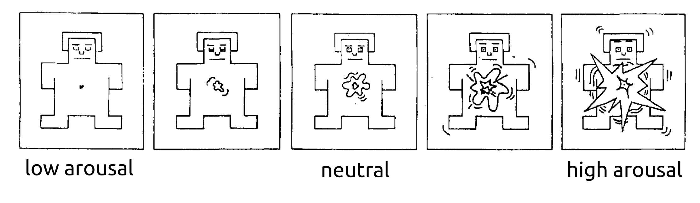

This scale relates to how awake, stimulated, or stirred up someone is.
High arousal is when someone has extreme feelings, like excitement or furious anger. 🤯😠🤩
Low arousal is closer to sleep, when people are most relaxed 😴🥱😪
You will rate someone's arousal using a scale like below. You can try it out now.